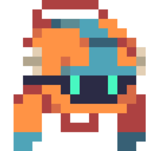

SP//✳
Spider-Man · Animado
Personaje · Verificado
INSTALAR +
SANABI GESTOR DescargarHerramientas de la comunidad · Windows + Linux
Mods, traducciones y tus partidas bajo un mismo techo. Elige qué instalar, prueba algo distinto y vuelve atrás cuando quieras.
Personaje · Verificado
INSTALAR +Idioma · 5 ediciones
✓ INSTALADOExperimental · En prueba
VER DETALLES ↗LISTO PARA DESPLEGAR
Descargas siempre vinculadas a la última release pública del proyecto. No necesitás instalar dependencias.
Ejecutable portable. Descargá y abrí el archivo.
AppImage para distribuciones Linux y Steam Proton.
Los enlaces se actualizan solos al publicarse una nueva release. También podés verla en GitHub.
HERRAMIENTAS PARA LA RESISTENCIA
SANABI Gestor organiza mods y traducciones en una aplicación sencilla. Elegí la carpeta del juego, encontrá algo que te guste y dejá que el gestor se ocupe de instalarlo y restaurar los archivos originales.
Explorar el código en GitHubExplorá el catálogo, mirá las instrucciones y administrá tus instalaciones desde un mismo sitio.
Instalá una traducción fechada y elegí la edición compatible que prefieras.
Sin instalador obligatorio. El gestor crea respaldos y te permite volver atrás al desinstalar.
UNA NUEVA FORMA DE JUGARLO
El mod reemplaza los archivos de texto del juego por una edición de traducción elegida. No traduce en tiempo real: descarga los archivos de la versión seleccionada y guarda respaldo para restaurarlos.
Descargar y empezarAbrí el gestor y seleccioná la carpeta donde instalaste SANABI.
Entrá en Mods → Traducción y elegí la edición fechada.
Pulsá Instalar. Para quitarla, desinstalala desde Mis mods.